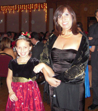

HOME
HPR San Diego Reinitas by Nelly Malone |
|
When I talked it over with my daughter Jessica, she was a bit hesitant as she does not speak Spanish. I told her it would be ok if we needed to learn a song(s) we could practice together. Of course Jessica was excited about the beauty part of it, never mind she couldn’t speak the language. My mother is always after me to “teach her some Spanish.” I knew I had my work cut out for me. Jessica Malone with Angie Freeman – HPRSD Queen/Princess
(Reinitas Borincanas) Program Coordinator. Photo by Nelly Malone Soon we were practicing for the inaugural walk and the choosing of the court, which would be held at one of the member meetings. The members would vote for the queen and princess and the winner would be announced at the annual HPRSD Lawn Festival in September. During the rehearsals we met fellow members; it was a good way to get acquainted with and make new friends. Jessica was chosen as Jr. Mini Princess the announcement came during the lawn festival. The look of joy on her face was priceless. She did manage to learn all the lyrics to “Mi Viejo San Juan” and could be heard belting out the tunes in Spanish with the other girls. She was very proud of herself. I remember Angie saying “not bad for someone who doesn’t speak Spanish.” Jessica & Nelly Malone – HPRSD Gala Fiesta de Navidad.Photo by Aileen Alvarado-Swaisgood Soon we were practicing for Paranda nights, the Gala and baking cookies for two senior homes to be delivered during the Christmas season. Jessica really looked forward to these gatherings as it was a time to get together with her new friends. I too enjoyed myself sharing with fellow members our holiday traditions. The court practiced a Danza taught by member and dance instructor Jose Lopez. It was a beautiful piece and the girls got to put their best foot forward for the seniors at St. Paul Villa and St. Paul Manor. They also performed for HPR members and their guests at the Christmas Gala held at the Portuguese Hall. We recently participated at the San Diego Multi-Cultural Fair over the Martin Luther King weekend. The weather was spectacular and my heart swelled with pride watching my little Jr. Mini Puerto Rican Princess talk to other kids about Puerto Rico and El Coqui. Thank you Angie, Casilda, Emily and the rest of you who donated your time to make it all come together. This was one of the best holiday season Jessica and I have had in a long time. ¡Que Viva Puerto Rico! Nelly Malone |
 I first became acquainted with Angie Freeman when I received a phone call at home one evening. Angie was very warm and welcoming asking if my daughter Jessica would like to participate in the mini category of the queen’s court. I told Angie Jessica was only eight but she would probably be interested. Angie told me I was planning for girls ten and older but let me think about it. After some thought she called back and said, ”well I had ten years old and older in mind, but I don’t want to leave anyone out so I will make a Jr. Mini category for that age group.”
I first became acquainted with Angie Freeman when I received a phone call at home one evening. Angie was very warm and welcoming asking if my daughter Jessica would like to participate in the mini category of the queen’s court. I told Angie Jessica was only eight but she would probably be interested. Angie told me I was planning for girls ten and older but let me think about it. After some thought she called back and said, ”well I had ten years old and older in mind, but I don’t want to leave anyone out so I will make a Jr. Mini category for that age group.”